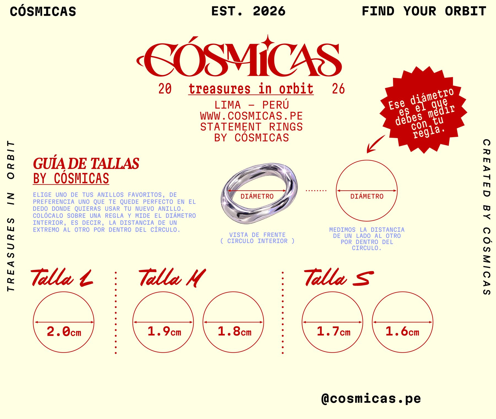

GUÍA DE TALLAS
Elige uno de tus anillos favoritos, de preferencia uno que te quede perfecto en el dedo donde quieres usar tu nuevo anillo. Colócalo sobre una regla y mide el diámetro interior: la distancia de un extremo al otro por dentro del círculo.
| Talla | Diámetro interior |
|---|---|
| L | 2.0 cm |
| M | 1.9 cm · 1.8 cm |
| S | 1.7 cm · 1.6 cm |
Algunos modelos son ajustables y se indican como «Ajustable» en su ficha. ¿Dudas? Escríbenos por WhatsApp antes de comprar y te ayudamos a elegir.
